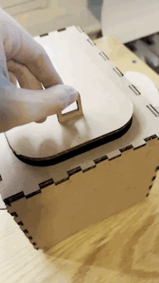
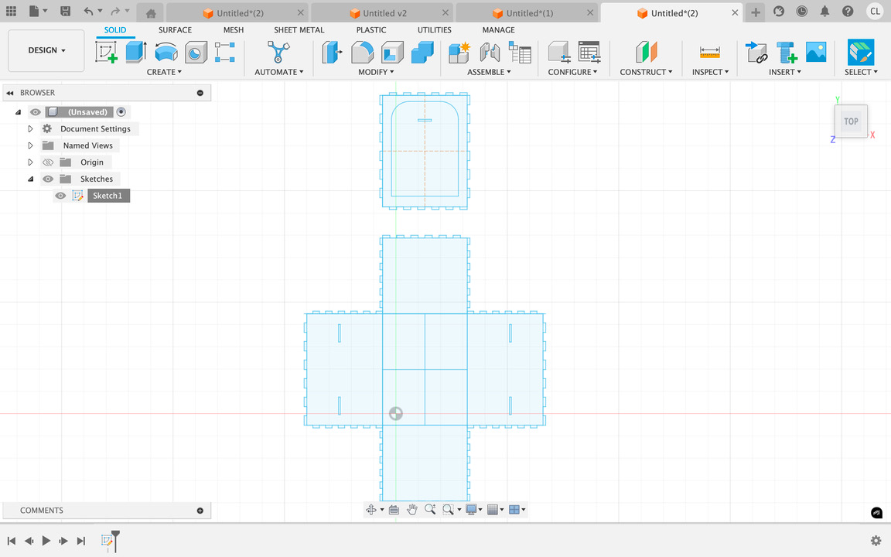
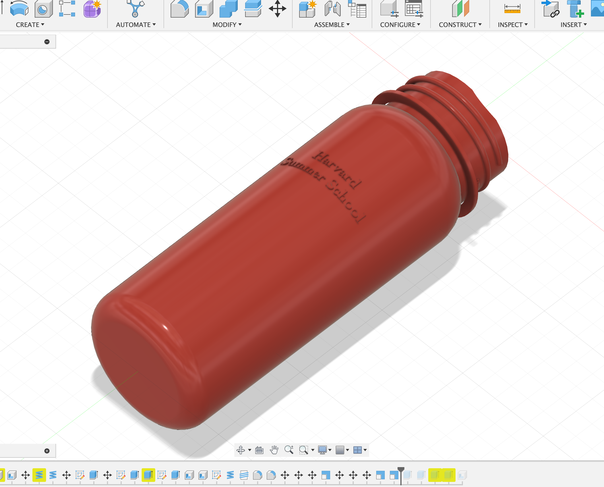
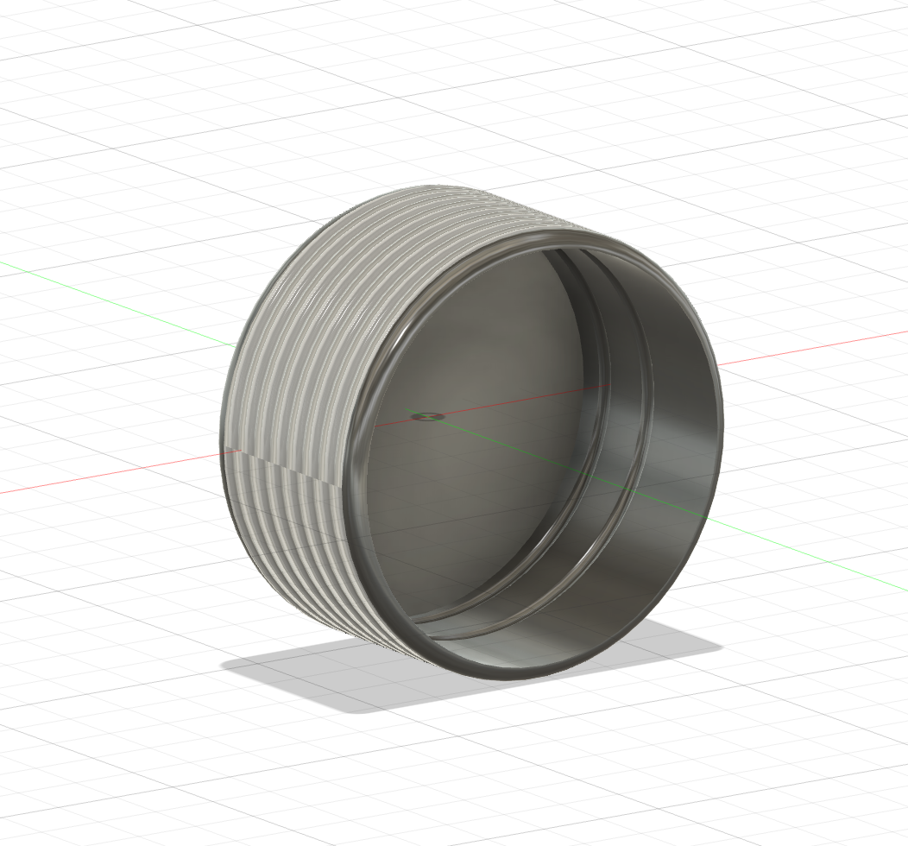

<div class="textcontainer">
<p class="margin"> </p>
<h3>Week 2: 2D Design & Cutting</h3>
<p class="margin"> </p>
<h2><b><u>Assignment 1: Make a Box</h2></b></u>
<p class="margin"> </p>
For my custom made box, I decided to follow the tutorial that was given and add some extra details. It took me a while to figure out the kerf and how to do the fingers, but eventually I got it and the box fit together perfectly. No glue was necessary to assemble each component of the box. Also, I really wanted to include a lid of some sort as well as some sort of handles, which resulted in my final product:
<p class="margin"> </p>
<img src="box.jpg" alt="Flowers in Chania"
width="300"
</div>

 </p>
<h2><b><u>Assignment 2: Fusion 360 Tutorial</h2><b></u>
<p class="margin"> </p>
I followed the tutorials from <a href="https://www.youtube.com/watch?v=d3qGQ2utl2A&t=38s">Fusion 360 in 30 Days for Beginners</a> and made the first two. They were really helpful in teaching me the new tools and how to work between 3d and 2d.
<p class="margin"> </p>
<img src="glass bottle.png" alt="Flowers in Chania
"
width="200"
/div>
<img src="lego block.png" alt="Flowers in Chania"
width="450"
<p class="margin"> </p>
I learned the extrude, revolve, coil, loft function, fillet, shell, etc.
<p class="margin"> </p>
<p class="margin"> </p>
<h2><b><u>Assignment 3: Fusion Modeling</h2></b></u>
<p class="margin"> </p>
For my modeling, I decided to measure out the dimensions of my harvard water bottle using calipers. I thought a water bottle was a fun idea because it was a makeshift screw if you think about it. I used the revolve tool and etrude tool the most to model it entirely from scratch. I started with the <u>bottle:</u>
<p class="margin"> </p>
 </p>
then the <u>cap:</u>
<p class="margin"> </p>
 </p>
and here's a video of the <u>function/assembly:</u>
<p class="margin"> </p>
<img src="assembly.gif" alt="Flowers in Chania"
width = "400"
<p class="margin"> </p>
<div class="flexrow">
<a id="btn" href="/Users/williamli/Downloads/waterbottle v1.dxf" download>Download DXF File:
</a>
</div>
<p class="margin"> </p>
</div>